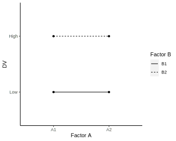
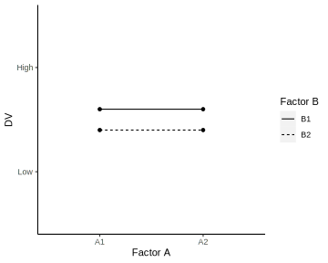

18|FACTORIAL ANOVA

Overview
Logic
Terminology
- Factor
- The variable that designates the groups being compared
- Between-participants / within-participants
- Levels
- Individual conditions or values that make up a factor
- Factorial design
- A study that combines two (or more) factors, each with two (or more) levels
- Can be manipulated between-participants or within-participants (or mixed-factorial design)
- E.g. 2x2 between-participants ANOVA
Logic
| Factor A | |||
|---|---|---|---|
| \(A_1\) | \(A_2\) | ||
| Factor B | \(B_1\) | \(A_1 B_1\) | \(A_2 B_1\) |
| \(B_2\) | \(A_2 B_1\) | \(A_2 B_2\) | |
- Three hypotheses tested by three \(F\)-ratios
- Main effect of Factor A
- Main effect of Factor B
- Interaction between A and B
- Each tested with same basic \(F\)-ratio structure
\(F = \dfrac{\textrm{variance between treatments}}{\textrm{variance expected with no treatment effect}}\)
Partitioning variance
Total variance
Variance between treatments
\(MS_{between \ treatments}\)
Variance within groups
\(MS_{within}\)
Factor A
\(MS_{A}\)
Factor B
\(MS_{B}\)
Interaction
\(MS_{A*B}\)
Calculations
Example data
| Snack | |||
|---|---|---|---|
| Banana | Candy | ||
| Test | Math | 7, 9, 8, 9 | 5, 4, 6, 5 |
| Reaction time | 5, 3, 4, 4 | 6, 6, 5, 5 | |
Equations
\(SS_{total} = \Sigma X^2 - \dfrac{G^2}{N}\)
\(SS_{within} = \Sigma SS_{within \ each \ treatment}\)
\(SS_{between} = \Sigma \dfrac{T^2}{n} - \dfrac{G^2}{N}\)
\(SS_{A} = \Sigma \dfrac{T^2_{col}}{n_{col}} - \dfrac{G^2}{N}\)
\(SS_{B} = \Sigma \dfrac{T^2_{row}}{n_{row}} - \dfrac{G^2}{N}\)
\(SS_{A*B} = SS_{between}-SS_{A}-SS_{B}\)
\(df_{total} = N-1\)
\(df_{within} = N-k\)
\(df_{between} = k-1\)
\(df_{A} = k_A-1\)
\(df_{B} = k_B-1\)
\(df_{A*B} = df_{between}-df_A-df_B\)
Summary table
Hypothesis test
Step 1. Hypotheses
| Snack | |||
|---|---|---|---|
| Banana | Candy | ||
| Test | Math | 7, 9, 8, 9 | 5, 4, 6, 5 |
| Reaction time | 5, 3, 4, 4 | 6, 6, 5, 5 | |
- Main effect of Snack Type
- \(H_0\): \(\mu_{banana} = \mu_{candy}\)
- \(H_1\): \(\mu_{banana} \ne \mu_{candy}\)
- Main effect of Test Type
- \(H_0\): \(\mu_{math} = \mu_{RT}\)
- \(H_1\): \(\mu_{math} \ne \mu_{RT}\)
- Snack * Test interaction
- \(H_0\): No interaction
- \(H_1\): There is an interaction
Step 2. Critical region
- Step 2. Critical region
- Numerators: \(df_{A} = k_A-1 = 1 \\ df_{B} = k_B-1 = 1 \\ df_{A*B} = k-1 - df_A - df_B = 1\)
- Denominator: \(df_{within} = N-k = 12\)
Step 3. Calculations
| Snack | |||
|---|---|---|---|
| Banana | Candy | ||
| Test | Math | \(T = 33\) \(SS = 2.75\) | \(T = 16\) \(SS = 2\) |
| Reaction time | \(T = 20\) \(SS = 2\) | \(T = 22\) \(SS = 1\) |
|
\(N = 16\)
\(n = 4\)
\(k = 4\)
\(k_A = 2\)
\(k_B = 2\)
\(G = 91\)
\(\Sigma X^2 = 565\)
\[\begin{align} df_{total} &= N-1 = 15 \\ df_{within} &= N-k = 12 \\ df_{between} &= k-1 = 3\\ df_{A} &= k_A-1 = 1\\ df_{B} &= k_B-1 = 1\\ df_{A*B} &= df_{between} - df_A - df_B = 1\\ \end{align}\]
Step 3. Calculations
| Snack | |||
|---|---|---|---|
| Banana | Candy | ||
| Test | Math | \(T = 33\) \(SS = 2.75\) | \(T = 16\) \(SS = 2\) |
| Reaction time | \(T = 20\) \(SS = 2\) | \(T = 22\) \(SS = 1\) |
|
\(N = 16\)
\(n = 4\)
\(k = 4\)
\(k_A = 2\)
\(k_B = 2\)
\(G = 91\)
\(\Sigma X^2 = 565\)
\[\begin{align} SS_{total} &= \Sigma X^2 - \dfrac{G^2}{N} = 47.44\\ SS_{within} &= \Sigma SS_{within \ each \ treatment} = 7.75\\ SS_{between} &= \Sigma \dfrac{T^2}{n} - \dfrac{G^2}{N} = 39.69 \\ \end{align}\]
Step 3. Calculations
| Snack | |||
|---|---|---|---|
| Banana | Candy | ||
| Test | Math | \(T = 33\) \(SS = 2.75\) | \(T = 16\) \(SS = 2\) |
| Reaction time | \(T = 20\) \(SS = 2\) | \(T = 22\) \(SS = 1\) |
|
\(N = 16\)
\(n = 4\)
\(k = 4\)
\(k_A = 2\)
\(k_B = 2\)
\(G = 91\)
\(\Sigma X^2 = 565\)
\[\begin{align} SS_{A} &= \Sigma \dfrac{T^2_{col}}{n_{col}} - \dfrac{G^2}{N} = 14.06\\ SS_{B} &= \Sigma \dfrac{T^2_{row}}{n_{row}} - \dfrac{G^2}{N} = 3.06\\ SS_{A*B} &= \Sigma SS_{between}-SS_A - SS_B = 22.56 \end{align}\]
Step 3. Calculations
| Snack | |||
|---|---|---|---|
| Banana | Candy | ||
| Test | Math | \(T = 33\) \(SS = 2.75\) | \(T = 16\) \(SS = 2\) |
| Reaction time | \(T = 20\) \(SS = 2\) | \(T = 22\) \(SS = 1\) |
|
\(N = 16\)
\(n = 4\)
\(k = 4\)
\(k_A = 2\)
\(k_B = 2\)
\(G = 91\)
\(\Sigma X^2 = 565\)
\(MS_{A} = \dfrac{SS_{A}}{df_{A}} = 14.06 \ \ \ \ \ \ \ \ MS_{B} = \dfrac{SS_{B}}{df_{B}} = 3.06\)
\(MS_{A*B} = \dfrac{SS_{A*B}}{df_{A*B}} = 22.56\)
\(MS_{within} = \dfrac{SS_{within}}{df_{within}} = 0.65\)
Step 3. Calculations
| Snack | |||
|---|---|---|---|
| Banana | Candy | ||
| Test | Math | \(T = 33\) \(SS = 2.75\) | \(T = 16\) \(SS = 2\) |
| Reaction time | \(T = 20\) \(SS = 2\) | \(T = 22\) \(SS = 1\) |
|
\(N = 16\)
\(n = 4\)
\(k = 4\)
\(k_A = 2\)
\(k_B = 2\)
\(G = 91\)
\(\Sigma X^2 = 565\)
\(F_A = \dfrac{MS_{A}}{MS_{within}} = 21.77\)
\(F_B = \dfrac{MS_{B}}{MS_{within}} = 4.74\)
\(F_{A*B} = \dfrac{MS_{A*B}}{MS_{within}} = 34.94\)
Interpretation
Interpreting interaction graphs

- Slope indicates main effect of factor on x-axis
- Distance between lines indicates main effect of other factor
- Parallel lines indicate no interaction
Interpreting interaction graphs
Interpreting interaction graphs
Interpreting interaction graphs

Interpreting interaction graphs
Interpreting interaction graphs
Your turn
- Come up with your own example
- 2 IVs with 2 levels each
- 1 DV (the thing you measure, e.g. test performance)
- Sketch graph of expected results
Learning checks
- True or False?
- Two separate single-factor ANOVAs provide exactly the same information that is obtained from a two-factor analysis of variance
- A disadvantage of combining 2 factors in an experiment is that you cannot determine how either factor would affect participants’ scores if it were examined in an experiment by itself
- If a two-factor analysis of variance produces a statistically significant interaction, then you can conclude that either/both main effects for factor A or factor B are also significant